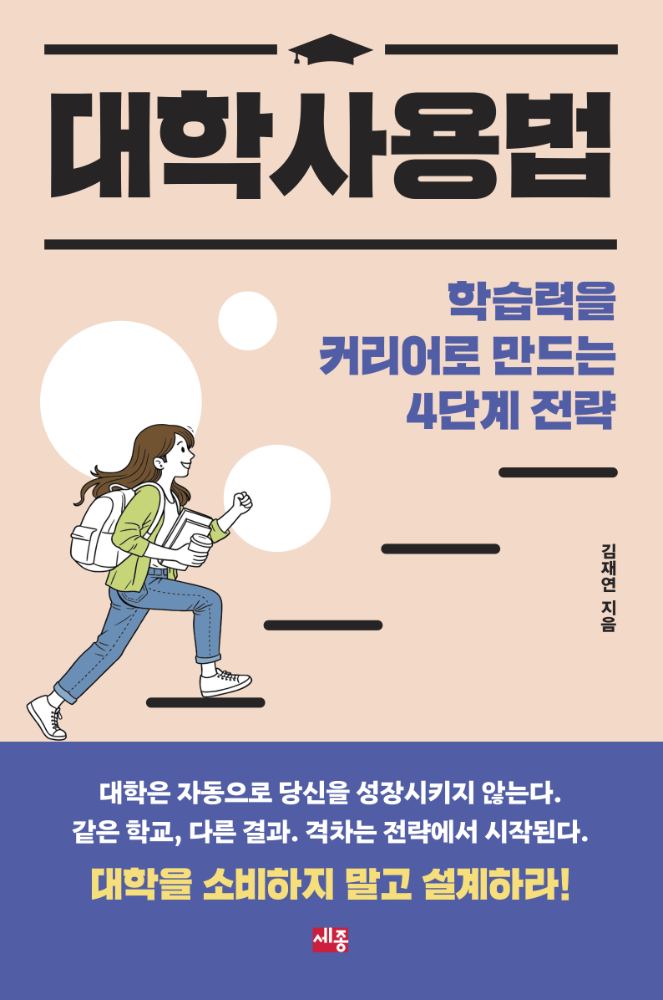

Book
In progress
Book project 1
Unseen and Uncounted: How Bureaucracy and Community Organizing Made New Racial Groups in America
Based on my dissertation.
-
Interviewed by Scope Conditions podcast
-
Winner of the 2022 Best Dissertation Award, Urban and Local Politics, APSA
-
Winner of the 2020 Best Paper Award, Asian Pacific American Politics, WPSA
-
Datasets: Asian American and Latino Advocacy and Community Service Organizations Dataset (1868-2016)
-
Interactive Map: Asian American and Latino Advocacy and Community Service Organizations
Unseen and Uncounted: How Bureaucracy and Community Organizing Made New Racial Groups in America introduces the concept of classification cost to explain how the administrative challenges of classifying marginalized communities shaped the rise of new racial group formations. Identifying diverse target populations using coarse administrative categories is difficult, but often unavoidable in policy implementation. These challenges became especially salient during the War on Poverty, when the federal government sought to expand safety net programs without revising how it categorized target populations. When the cost of recognizing small, fragmented, or poorly understood immigrant populations was deemed too high, the state often defaulted to residual labels such as “Other.”
Faced with exclusion from official categories, government statistics, and resource allocation decisions, ethnic elites engaged in political innovation. They coined new panethnic labels, built coalitions across national origin lines, and established civic organizations that rendered their communities legible to the state. These bottom-up efforts reduced classification costs for local government agencies in implementing policies. Over time, these strategies scaled upward, influencing federal classification schemes and institutionalizing panethnic categories such as “Asian American” and “Latino.”
Drawing on original data from both local administrators and community organizers, the book traces the development of policies governing diverse low-income populations at the subnational, national, and transnational levels during the postwar period of American political development. Governing diversity pushes the limits of state capacity because it requires more and better information. When obtaining such information is difficult, one option is to borrow informational capacity from communities. Even in the era of artificial intelligence, this challenge persists and the solution remains relevant. No matter how powerful the machines embedded in government become, the ground truth is on the ground, among the people the state aims to serve.
Sample chapters are available upon request. I plan to complete the first draft by 2026 and will schedule book workshops in Spring 2027 (UC Berkeley and elsewhere).
Table of Contents
- Identity Politics is Just Politics
- Chapter 1. War on Poverty, Classification Cost, and Community Organizing
- Chapter 2. Visibility Is the Name of the Game: Organizational Adaptation Under the War on Poverty
- Chapter 3. A Tale of Three Chinatowns: Political Geography, Trust, and Paths to Solidarity
- Chapter 4. Race, Class, and Panethnic Civil Society in the Post-Reagan Era
- Chapter 5. Classification Cost and New Group Formation: The Making of Gig Workers
- Governing Diversity: Why Both State and Civic Capacity Matter Even in the Era of Artificial Intelligence
Book project 2
Burdens, Profits, and People Power: Inequality and Resistance in the American AI Contracting State
Table of Contents
- Procurement as Politics by Other Means
- Part I. The Political Economy of the American Contracting State
- Chapter 1: How Someone’s Burden Becomes Someone Else’s Profit
- Chapter 2: The Political Economy of Compliance
- Chapter 3: New Technologies, Old Institutions
- Part II. Turning People Power Into Policy Innovations
- Chapter 4: What the Public Knows, Can Know, and Should Know
- Chapter 5: From Resistance to Institutional Reform
- Procurement as a New Progressive Agenda
Korean Books
Published 2023 · In Korean
We Need Civic Data: How Public Data Can Fail Us, and How It Can Build a More Just Society
Sejong Books, 2023 · Book website
Why can we shop with one click but still struggle to access basic public services?
We Need Civic Data is the first book in Korean to comprehensively examine the concept, practice, and promise of civic data, data designed not for profit or bureaucratic procedure, but for the public good. Written by social data scientist and public interest technologist Jae Yeon Kim, the book draws on real-world policy examples from the U.S. and South Korea to show how government data systems shape who gets access to benefits, who gets heard, and who gets left behind. Across ten clear and accessible chapters, Kim offers a roadmap for building a more equitable, human-centered digital state.
Impact & Recognition
-
Selected as one of 70 finalists by the Korean Government in the popular social science category for 2024; the government purchased approximately 500 copies and distributed them to public libraries nationwide
-
Recommended by the National Assembly Library, Samsung Global Research’s executive education program (SERICEO), and the Korea Institute of Science and Technology (KIST)
-
Featured in major Korean newspapers across the ideological spectrum: The Chosun Ilbo, Maeil Business Newspaper, The Korea Economic Daily, Kyunghyang Shinmun, Hankyoreh
-
Regular op-eds based on the book published in: Chosun Ilbo’s Civic Section (a major conservative newspaper) and Weekly Kyunghang (a major liberal magazine)

Published 2026 (2nd ed.) · In Korean
How to Use University: Learning How to Learn and Why It Matters for a Fulfilling Career
Sejong Books, 2nd ed., 2026 · Book website
Why do so many students enter college full of ambition, only to graduate with more confusion than clarity?
How to Use University is a practical guide to navigating college with purpose. Organized around four core themes, exploring college, learning, career, and life, it helps students shift from passive schooling to intentional, opportunity-driven learning. The book encourages students to treat the university as a launchpad for discovering interests, initiating projects, and building community. It emphasizes a key idea: unlocking even one small opportunity, especially a self-initiated project, can set off a cycle of opportunities that grows over time.
Impact & Recognition
-
The first edition sold over 10,000 copies and has been widely recommended by educators, university counselors, and mentoring programs across South Korea
-
Featured in major Korean media outlets including Maeil Business Newspaper and Chosun Biz
-
Frequently used in student development seminars and campus book clubs
-
A fully revised second edition was published in 2026.

